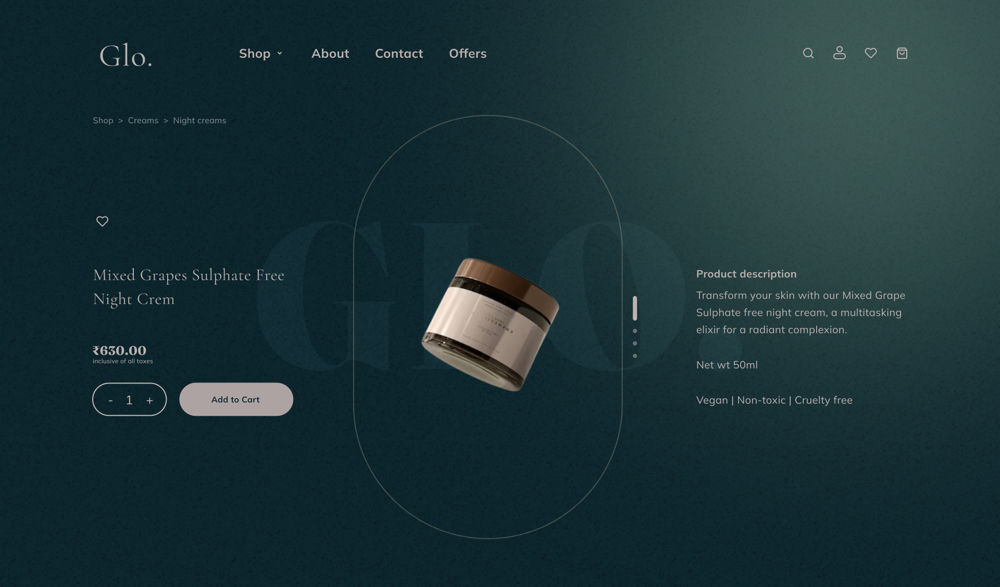

Glo. — Product description
Chỉ bản code
Đè 50%
Chỉ Figma
Difference
Kéo trượt
Lưới 100px
Trang Shop →
Landing page →
Giỏ hàng →
Trang giỏ hàng →
1920 × 1128 — zoom trình duyệt để xem vừa màn hình. Kéo trượt: kéo góc dưới cùng bên phải của lớp Figma
